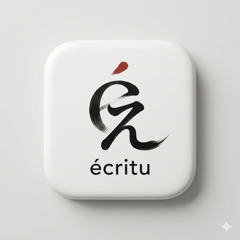
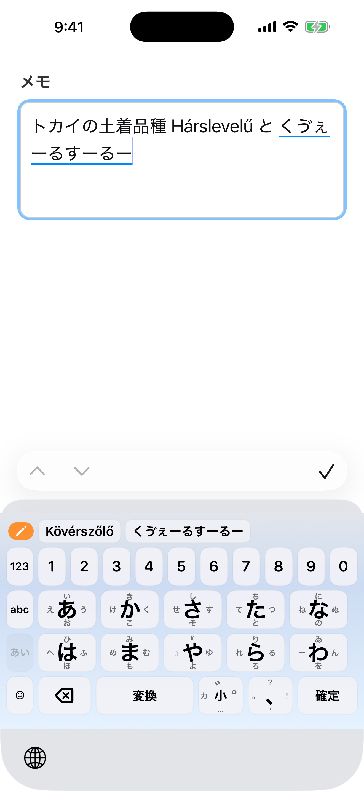
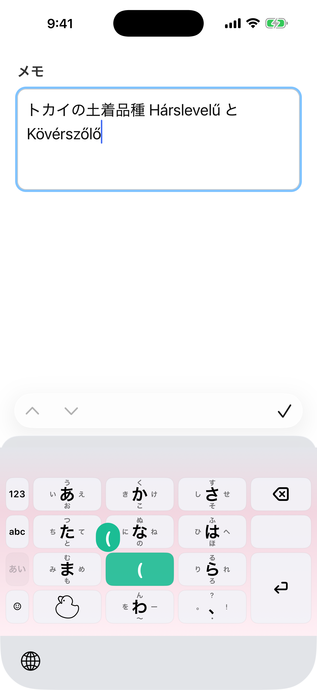
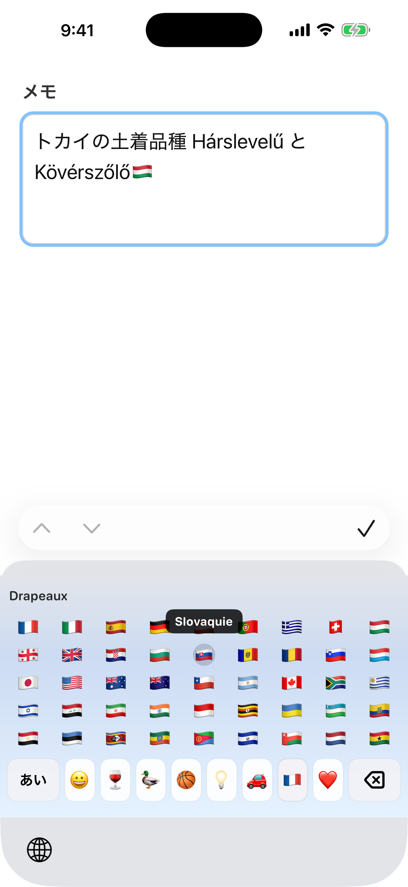
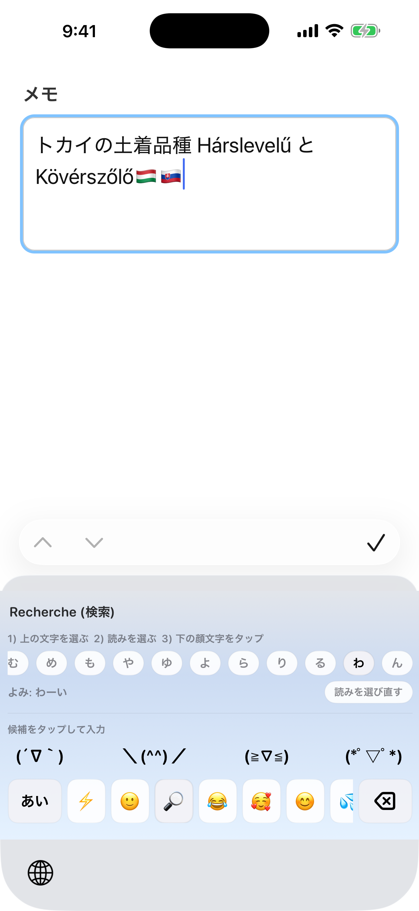
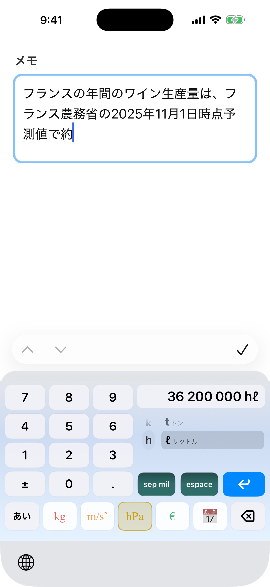
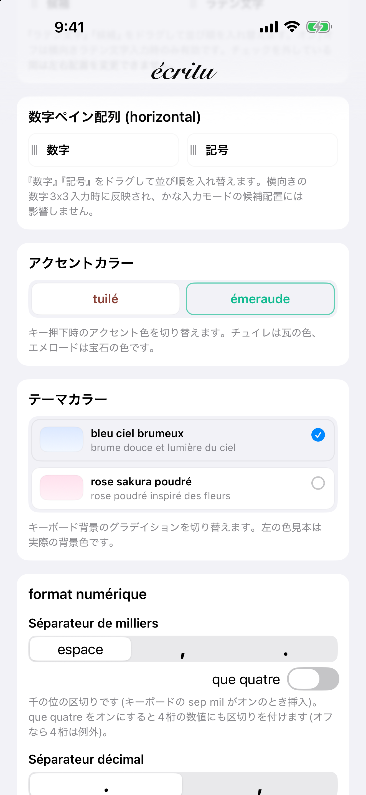

écritu
サン・ストレスな日本語フリックキーボード






écritu(エクリチュ)は、「モード切り替えを最小に」を合言葉に設計された iPhone 用の日本語フリック入力キーボードです。
通信ゼロ。入力内容は端末の外に出ません
écritu にはネットワーク通信を行うコードそのものがありません。入力した文字、変換履歴、学習した語彙が開発者を含む誰かに送られることは、仕組みの上でありえません。解析SDK・広告SDKも不使用。フルアクセスの用途は、本体アプリとキーボードの間で設定と学習語彙を共有することだけです。
モードを切り替えずに、そのまま打てる
「?」「!」「。」「・」は読点キーのフリックに、「〜」「ー」はわキーに、『』などの括弧はやキーに。よく使う記号のためにいちいち記号モードへ入る必要はありません。やキー・わキーは「2段フリック」に対応し、()「」や旧仮名の「ゐ」「ゑ」まで指を離さずに入力できます。
賢い変換と、育つ辞書
文節をまたいだ連文節変換に対応。確定した候補は端末内で学習され、使うほどあなたの言葉に馴染みます。単語の手動登録(追加語彙)、出したくない候補を隠す抑制語彙、定型文のショートカット語彙、iOS の連絡先やユーザ辞書との連携も。
絵文字・顔文字・記号のパネル
カテゴリー分けされた絵文字(国旗は長押しで国名をフランス語表示)、読みから探せる顔文字検索、通貨・単位・数学記号・矢印・囲み文字。漢字1字を部首から探せるピッカーも備えています。
数字・単位・日付の入力補助
数字モードでは 3,000 のような桁区切り、km や ℃ などの単位、金額、日付や曜日(カレンダー表示つき)まで、書式化された数値をそのまま入力できます。
欧文もサジェスト
英語・フランス語・ドイツ語・イタリア語の入力補完を搭載(オフライン辞書)。アクセント付き文字も長押しで。メールアドレスやURLの欄では自動的に英字配列で開きます。
細かな設定
かな配列(5×2 / 3×3+わ)、フリック方向(hanabi / littlebear / écritu)、英字配列(QWERTY / AZERTY / 3×3)、テーマとアクセントカラー、フリックガイドの表示方法など、細部まで好みに合わせられます。
操作方法の詳しい説明は、操作マニュアル(全9章。アプリのアイコンを長押ししたメニューから Safari で開けます)をご覧ください。